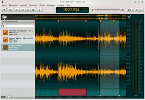

ocenaudio
Dieser Artikel wurde für die folgenden Ubuntu-Versionen getestet:
Ubuntu 16.04 Xenial Xerus
Ubuntu 14.04 Trusty Tahr
Zum Verständnis dieses Artikels sind folgende Seiten hilfreich:
ocenaudio  ist ein leichter, schneller und einfach zu bedienender Audio-Editor. Das Programm ist nicht nur für Linux erhältlich, es gibt auch eine Version für Mac OS X und Windows. Das Programm wurde mit Qt und dem ocenFramework umgesetzt. Die Entwicklung des Programmes startete als Forschungsgruppe der Federal University of Santa Catarina in Brasilien, die eine leicht zu benutzende Software zum Bearbeiten von Audio-Dateien benötigte.
ist ein leichter, schneller und einfach zu bedienender Audio-Editor. Das Programm ist nicht nur für Linux erhältlich, es gibt auch eine Version für Mac OS X und Windows. Das Programm wurde mit Qt und dem ocenFramework umgesetzt. Die Entwicklung des Programmes startete als Forschungsgruppe der Federal University of Santa Catarina in Brasilien, die eine leicht zu benutzende Software zum Bearbeiten von Audio-Dateien benötigte.
Im Gegensatz zu Audacity verfügt ocenaudio nicht über so viele Funktionen, ist jedoch einfacher in der Bedienung – ist also perfekt geeignet, um schnell einfache Schnittaufgaben zu erledigen. Dennoch bietet ocenaudio eine Vielzahl an Funktionen:

Unterstützung für VST-Plugins
Echtzeit-Vorschau von Effekten wie Eingangsverstärkung, Filtern usw.
Mehrfachauswahl zum Markieren von mehreren Abschnitten zugleich
Ein funktionsreiches Spektrogramm
Effekte & Filter, wie etwa Normalisierung
Integrierte Funktion zum Erstellen eines Bilds der Hüllkurve/eines Sonagramms
Unterstützte Dateiformate:
und weitere.
Installation¶
 Da das Programm nicht in den offiziellen Paketquellen von Ubuntu enthalten ist, muss auf Fremdpakete ausgewichen werden.
Da das Programm nicht in den offiziellen Paketquellen von Ubuntu enthalten ist, muss auf Fremdpakete ausgewichen werden.
Fremdpakete¶
Hinweis!
Fremdpakete können das System gefährden.
Ein zur eigenen Systemarchitektur passendes Fremdpaket kann von der Download-Seite  heruntergeladen und manuell installiert werden [1]. Wenn eine neuere Version vorliegt, muss dieser Vorgang wiederholt werden.
heruntergeladen und manuell installiert werden [1]. Wenn eine neuere Version vorliegt, muss dieser Vorgang wiederholt werden.
Ubuntu 14.04:
32-Bit: ocenaudio_mint32.deb
64-Bit: ocenaudio_mint64.deb
Ubuntu 16.04:
32-Bit: ocenaudio_debian32.deb
64-Bit: ocenaudio_debian64.deb
Die Installation erfolgt in den Ordner /opt/ocenaudio/.
Bedienung¶
Der Programmstart erfolgt bei Ubuntu-Varianten mit einem Anwendungsmenü über "Multimedia -> ocenaudio" [2]. Möchte man das Programm über die Kommandozeile starten, verwendet man folgenden Befehl:
/opt/ocenaudio/bin/ocenaudio
| Selektion | |
| Aktion | Tastenkombination |
| Abschnitt markieren | Linke Maustaste  drücken und bis zum Ende des Abschnitts ziehen, dort los lassen. drücken und bis zum Ende des Abschnitts ziehen, dort los lassen. |
| Markierten Abschnitt erweitern/verringern | Wie beim normalen Markieren, jedoch mit gedrückter ⇧ -Taste |
| Weitere Abschnitte markieren | Beim Markieren Strg gedrückt halten |
| Navigation/Ansicht | |
| Aktion | Tastenkombination |
| Skala der Hüllkurve oder des Spektrogramms ändern | Mausrad |
| In vertikale Skala hinein/heraus zoomen | Auf der Skala scrollen, ⇧ +scrollen, oder Tastenkombination |
| In Zeitachse (horizontal) hinein/heraus zoomen | Auf der Skala scrollen oder Tastenkombination |
| Auf vertikaler Skala bewegen | Zeitleiste greifen |
| Auf der Zeitachse bewegen | Zeitleiste greifen, Sichtfeld in der Übersicht bewegen,  halten und bewegen halten und bewegen |
| Ansicht an Abschnitt ausrichten | Dazu auf die Lupe in der rechten oberen Ecke klicken |
| Funktionen | |
| Aktion | Tastenkombination |
| Auswahl in Schleife abspielen | Strg + L |
| Stummschalten einzelner Spuren | Dazu bewegt man die Maus an den rechten Rand und klickt auf die erscheinenden Lautsprechersymbole |
| Markierung einfügen | Strg + K |
Die Tastenbelegung kann über "Bearbeiten -> Einstellungen -> Tastenkombinationen" angepasst werden.
Problembehebung¶
Informationen zur verwendeten Lizenz¶
Im Programm ist folgende Information enthalten: „All Right Reserved“. Genauere Angaben zu den Lizenzbedingungen sind in der Datei /opt/ocenaudio/LICENSE.txt enthalten. Mittelfristig ist nicht geplant, den Quelltext zu veröffentlichen oder eine liberalere Lizenz zu wählen (was durch die integrierte VST-Schnittstelle bedingt ist).
Feedback zur deutschen Lokalisierung¶
Bitte bei stemuedendron melden.
 Übersichtsartikel
Übersichtsartikel- Erstellt mit Inyoka
-
 2004 – 2017 ubuntuusers.de • Einige Rechte vorbehalten
2004 – 2017 ubuntuusers.de • Einige Rechte vorbehalten
Lizenz • Kontakt • Datenschutz • Impressum • Serverstatus -
Serverhousing gespendet von